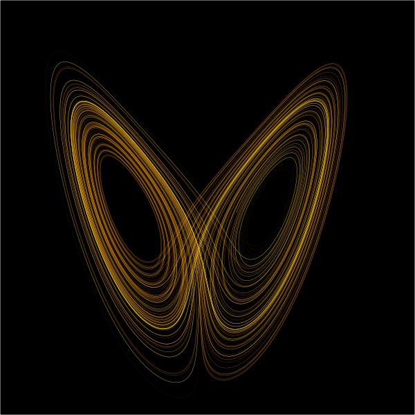

Predicciones
Si somos malos para explicar el pasado, ¿cómo somos prediciendo el futuro?
Nos encantan las predicciones. Todos los años leemos predicciones sobre tecnología escritas por expertos de importantes firmas como Gartner y otros. Importantes think tanks y publicaciones hacen predicciones sobre eventos económicos y políticos, e incluso los diarios citan a adivinos, astrólogos y numerólogos que vaticinan los eventos del año. Estos últimos parecieran tener muy malos resultados, pero ¿son mejores las predicciones de un astrólogo que las de una prestigiada firma especialista en estudios de mercado? La verdad es que nadie sabe, porque nadie se preocupa de hacer alguna auditoría a los resultados.
Pero hay un experimento realizado por el sicólogo Philip Tetlock que puso a prueba la capacidad de predicción de 284 expertos políticos. A mediados de la década de 1980 Tlelock contactó a estos expertos y les solicitó cerca de cien predicciones sobre una variedad de posibles eventos futuros, desde los posible resultados de una elección a la probabilidad de que dos naciones se enfrentaran en un conflicto armado. Por cada predicción se les pidió a los expertos que especificaran cual de dos opciones esperaban que sucediera, y que asignaran una probabilidad a su predicción. Después de recoger estas predicción Tlelock esperó veinte años, y publicó sus resultados1.
Aunque los expertos tuvieron un comportamiento mejor que la adivinación
al azar, no lo hicieron tan bien comparados con un sencillo modelo
estadístico. Pero lo más sorprendente es que los expertos lo hicieron
ligeramente mejor cuando operaban fuera de su área de experiencia. Los
resultados de este experimento, y muchas otras historias sobre la
capacidad de los expertos para predecir el futuro son la base del libro
de Dan Gardner Future Babble
En este libro Gardner entrega una serie de historias que muestran la consistente incapacidad de los expertos para predecir el futuro, al grado que parece que cualquiera de nosotros lo podría hacer mejor.
Nadie predijo nunca el éxito de La Guerra de las Galaxias o Harry Potter, el colapso económico de fines de 2008, o el éxito de Google o Facebook. A fines de la década de 1990 Sergey Brin y Larry Page trataron infructuosamente de vender su empresa por 1.6 millones de dolares, y nadie pensaba que esa empresa llegara valer eso, menos mal, porque actualmente Google está evaluada unas 100.000 veces más.
Dado esto pareciera que los seres humanos simplemente somos malos en hacer predicciones. Pero no es tan así. Por ejemplo, todos los días podemos hacer un cierto grado de predicción sobre el clima de nuestra localidad, y curiosamente nuestras predicciones serán bastante buenas. Sabemos que ciertas cosas sucederán, y nos parecen inevitables, o hay otras que simplemente suceden con una periodicidad que son totalmente predecibles. El sol seguirá saliendo por el oriente, es difícil que haya una guerra entre Canada y Estados Unidos en los próximos diez años, etc. Claro que estas predicciones no impresionan a nadie. En palabras de Duncan Watts: “el problema real de las predicciones no es que seamos universalmente buenos o malos en estas, sino que somos malos en distinguir las predicciones que podemos hacer con certeza de aquellas que no podemos.”
En los sistemas simples podemos hacer predicciones precisas, por ejemplo, podemos predecir cuando volverá a aparecer el cometa Halley, porque conocemos su órbita y hay un modelo simple que nos permite predecir su evolución a través del sistema solar. Pero en los sistemas complejos, como los sistemas sociales, esto no es posible. Lo que podemos hacer es dar cierta probabilidad de que un hecho ocurra. Sin embargo, los sistemas complejos no son exactamente aleatorios, el hecho de que podamos calcular probabilidades de que ciertos eventos ocurran no tiene que ver con una naturaleza aleatoria. Los sistemas complejos son caóticos, es decir, son el fruto de miles o millones de micro interacciones. El problema es que cada interacción contribuyen a perturbar el sistema de formas que son impredecibles. Estamos ante algo conocido popularmente como el efecto mariposa.

“El simple aleteo de una mariposa puede cambiar el mundo”, hemos escuchado frases de ese estilo, una mariposa aletea en el Amazonas y se desata un monzón en el océano índico. Las condiciones iniciales en un sistema complejo pueden variar ligeramente y los resultados variar enormemente. El concepto de efecto mariposa viene del trabajo de Edward Lorenz quien trabajaba en el modelamiento de predictores del clima. Actualmente los modelos de predicción del tiempo son bastante buenos, pero aún así son muy sensibles a pequeñas variaciones. No es posible predecir más allá de cierta cantidad de días, porque las perturbaciones se van haciendo cada vez mayores a medida que pasa el tiempo. Por eso que los modelos climáticos entregan sus resultados expresados como probabilidades, “la probabilidad de que llueva mañana es de un 60% y que llueva pasado mañana un 40%”.
Entonces, cuando en 2008, un día antes de que saliera electo Barack Obama se hablaba de que el tenía una probabilidad sobre el 90% de ser electo, a ¿qué se referían? ¿a que si se hubiera postulado 10 veces presidente habría ganado 9? Claramente no, porque esta elección es un evento único. Desde un punto de vista matemático asignar probabilidades a un evento único es algo problemático.
Cuando miramos al pasado no sentimos confusión sobre los eventos que sucedieron, y sabemos cuales eventos eran relevantes. Pero, ¿cuáles eventos son los relevantes en el futuro? El futuro es una gran nube de probabilidad que colapsa cuando las cosas pasan. Sólo cuando los eventos ocurren podemos saber cuales eran los más importantes y relevantes. Luego se deduce que la importancia de los eventos requiere que la predicción no sólo sea sobre los hechos que ocurrirán, sino del resultado de los mismos. Si vamos a predecir eventos sociales, no sólo debemos predecir qué sucederá, sino cuál será el proceso social que hace que todo lo sucedido tenga sentido.
Hemos visto que el sentido común no nos da explicaciones de los eventos pasados, sólo descripciones de los mismos, añadan esto a a nuestra incapacidad para predecir el futuro. El problema es que las políticas económicas, los planes de desarrollo, las políticas públicas afectan a grandes grupos de personas. Una campaña de marketing, o un plan de salud público dependen de nuestra capacidad para asociar adecuadamente la causa del efecto, así que requieren de una explicación científica apropiada, más que de una narración histórica de los hechos. Por todo esto uno se pregunta si no habrá una manera mejor de hacer predicciones, una suerte de “sentido no común” que nos ayude. Pues ese será nuestro objetivo ahora, la búsqueda del sentido no común, de sus virtudes e implicancias para la predicción, la planificación y la ciencia social.
-
Expert Political Judgment: How Good Is It? How Can We Know?
, Philip Tetlock. ↩︎